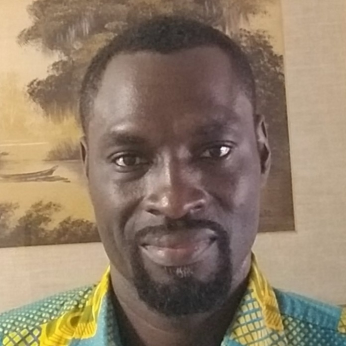

Geoinformatics Team
Home
Research
Team
Publication
Opportunity
Team Members

Clifford BRONI-BEDIAKO
Postdoctoral Researcher
Xiaoyu DONG
Junior Research Associate
Wanshui GAN
Junior Research Associate
Junshi XIA
Senior Research Scientist
Naoto YOKOYA
Team Leader
Zhihao LIU
Junior Research Associate
Visiting Scientists & Part-time Workers
Name
Position
Primary Affiliation
Links
Ting XU
Intern
University of Electronic Science and Technology of China
Damián IBÁÑEZ
Intern
Universitat Jaume I
Shunichi KOSHIMURA
Visiting Scientist
Tohoku University
Masashi MATSUOKA
Visiting Scientist
Tokyo Institute of Technology
Wei HE
Visiting Scientist
Wuhan University
Tianyi ZHANG
Part-timer Worker
The University of Tokyo
Jian SONG
Part-timer Worker
The University of Tokyo
Yuting TANG
Part-timer Worker
The University of Tokyo
Shintaro NAKAMURA
Part-timer Worker
The University of Tokyo
Or RAVEH
Part-timer Worker
The University of Tokyo
Alumni
Name
Position
Period
Links
Bruno ADRIANO
Research Scientist
2018.06-2023.01
Tatsumi UEZATO
Research Scientist
2019.01-2021.08
Gerald BAIER
Postdoctoral Researcher
2018.09-2020.10
Tien Dat PHAM
Postdoctoral Researcher
2018.05-2019.11
Sadra KARIMZADEH
Postdoctoral Researcher
2019.01-2019.08